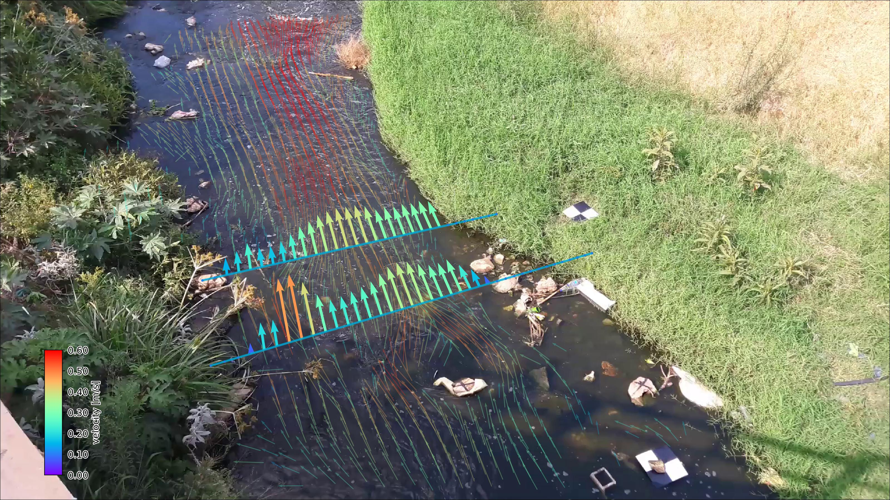

Welcome to pyOpenRiverCam’s documentation!#
pyorc, short for “pyOpenRiverCam” is a fully Open Source library for performing image-based river flow analysis. It is the underlying library for computations on the fully open software stack OpenRiverCam. pyorc can only be successful if the underlying methods are made available openly for all. Currently pyorc implements Large-scale Particle Image Velocimetry (LSPIV) based flow analysis using the OpenPIV library and reprojections and image pre-processing with OpenCV. We wish to extend this to Large-scale Particle Tracking Velocimetry (LSPTV) and Space-Time Image Velocimetry (STIV) for conditions that are less favourable for LSPIV using open libraries or extensions to this code.
Image: Example of pyorc velocimetry over Ngwerere river at the Zambezi Road crossing - Lusaka, Zambia.
Current capabilities are:
Reading of frames and reprojection to surface
Velocimetry estimation at user-defined resolution
Discharge estimation over provided cross-section
Plotting of velocimetry results and cross-section flows in camera, geographical and orthoprojected perspectives.
We use the well-known xarray data models and computation pipelines (with dask) throughout the entire library to guarantee an easy interoperability with other tools and methods, and allow for lazy computing.
We are seeking funding for the following frequently requested functionalities: * A command-line interface for processing single or batch videos * Implementation of better filtering in pre-processing * Improved efficiency of processing * Establishing on-site edge computation through a raspberry-pi camera setup * Implementation of additional processing algorithms (STIV and LSPTV)
Note
pyorc has been created by Rainbow Sensing to support local people, with local devices and software to monitor their environment. If you like pyorc, require additional functionalities or want to contact us for other work or ideas, please email us on info@rainbowsensing.com
Note
Acknowledgement: the development of pyorc has been funded partly by the World Meteorological Organisation and partly by in-kind contributions of Rainbow Sensing.